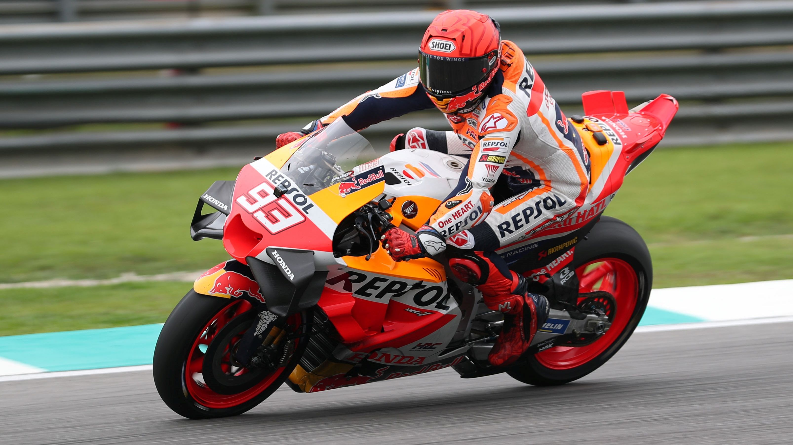

PILOTO DE MOTOCICLISMO
Marc Márquez empezó su trayectoria en 1997 disputando su primera carrera en la modalidad de enduro y en los años posteriores hasta su ascenso a las categorías más altas del motociclismo compitió en categorías más bajas, donde tuvo bastante éxito y ganó una cantidad considerable de premios.
Marc Márquez Alentà (Cervera, Lérida, 17 de febrero de 1993) es un piloto de motociclismo español que compite en MotoGP.2 Ha ganado ocho títulos del Campeonato del Mundo de Motociclismo en tres categorías diferentes: 125cc (2010), Moto2 (2012) y seis veces en MotoGP (2013, 2014, 2016, 2017, 2018 y 2019).3 Desde 2013 es piloto del equipo Repsol Honda, acumulando 59 victorias y 101 podios en más de 150 carreras disputadas.4
En su primera temporada en la categoría, se hizo con el Campeonato del Mundo de Motociclismo, convirtiéndose en el piloto más joven en ganar un campeonato de la máxima categoría de este deporte (MotoGP), superando así el récord de Freddie Spencer. Es, además, el piloto más joven de la historia en ser bi, tri, tetra, penta y hexa campeón de la categoría reina del motociclismo.
Tiene un hermano tres años menor, Álex Márquez (n. 1996), que, actualmente, corre en la categoría de MotoGP y ha obtenido dos títulos del Campeonato del Mundo de Motociclismo. Marc y Álex son los únicos hermanos que han conseguido un Campeonato del Mundo de Motociclismo y además en la misma temporada (en 2014 y en 2019), junto con haber sido los primeros hermanos en vencer en un Gran Premio en el mismo día (el 15 de junio de 2014 en el Gran Premio de Cataluña de Motociclismo, en el circuito de Montmeló, España) y los que más veces han coincidido en el podio de un Gran Premio.
| Temporada | Categoría | Carreras | Victorias | Pts. | Pos. |
|---|---|---|---|---|---|
| 2008 | Moto3 | 13 | 0 | 63 | 13.º |
| 2009 | Moto3 | 16 | 0 | 94 | 8.º |
| 2010 | Moto3 | 17 | 10 | 310 | 1.º |
| 2011 | Moto2 | 15 | 7 | 251 | 2.º |
| 2012 | Moto2 | 17 | 9 | 328 | 1.º |
| 2013 | MotoGP | 18 | 6 | 334 | 1.º |
| 2014 | MotoGP | 18 | 13 | 362 | 1.º |
| 2015 | MotoGP | 18 | 5 | 242 | 3.º |
| 2016 | MotoGP | 18 | 5 | 298 | 1.º |
| 2017 | MotoGP | 18 | 5 | 298 | 1.º |
| 2018 | MotoGP | 18 | 9 | 321 | 1.º |